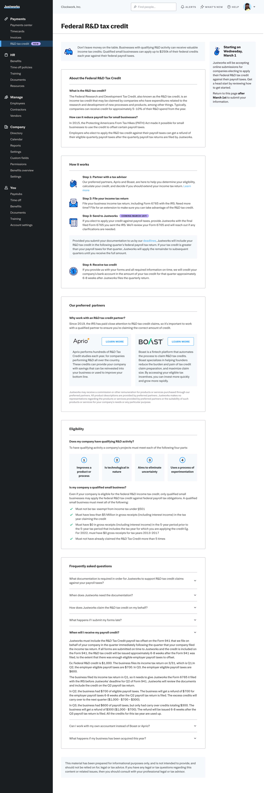
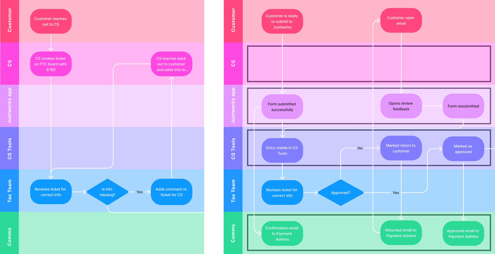
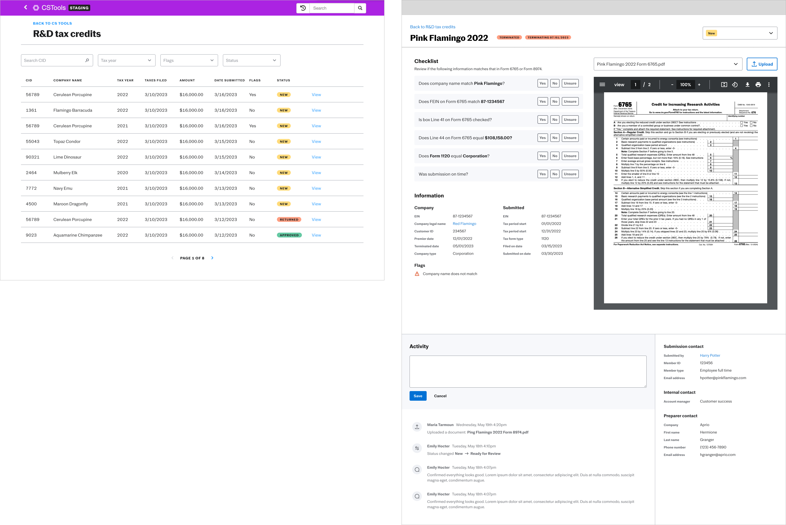
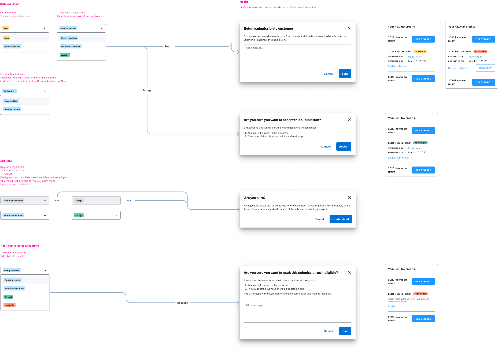

Justworks R&D Tax Credits
Increasing the amount of eligible customers claiming the R&D tax credit while streamlining the claims process.

Strategic Challenge
Justworks saw a 9,675% increase in customers submitting R&D claims between 2016 and 2021. The team needed a scalable way to educate customers, collect required information, and review submissions without relying on a manual back-and-forth between customers and Customer Success.
Educating Customers


The first milestone was a product details page that helped customers understand R&D tax credits and the accounting partnerships available through Justworks. I facilitated a content workshop with key stakeholders to identify what customers needed to learn before entering the submission flow.
Submitting Claims


The customer-facing flow allowed customers to submit paperwork and apply for the R&D tax credit on time. Previously, this was handled through email and Jira, making the process harder to scale and dependent on Customer Success.
We split the experience into three milestones: education, in-app submission, and internal review tooling. This let the team launch awareness efforts before the full workflow was ready.
Tax Credit Management


Through shadowing, card sorting, and usability testing, I partnered with Client Tax Services to understand their review process. The internal tool supported activity tracking, missing information checks, and a clearer way to verify submission details.
Reviewers needed enough context to understand what happened in prior review steps, which information had been verified, and where a follow-up was still needed.
Results
- Removed Customer Success from the tax credit management process so they could focus on other work.
- Justworks distributed an average of $89k in credit back to eligible customers.
- The R&D education page led to a 128% increase in Help Center views year over year.
- Reduced review of an “easy” submission from 30 minutes to 10 minutes, estimating 210 hours saved across 700 submissions.
Reflection
While the workflow diagram helped communicate the process, there was an opportunity to push further into service design. Halfway through the project, I adjusted the review process so legal was always the final reviewer, reducing churn after legal approval.